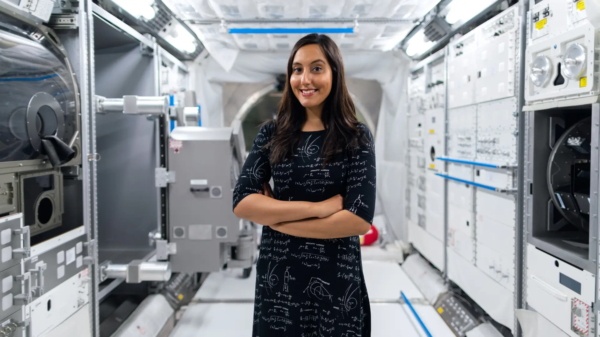
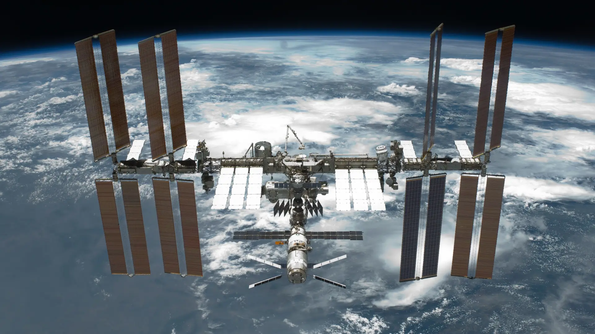

space station
The international space station is the culmination of the world's leading space agencies who had banded together to create something truly spectacular. It's comprised of Europe's ESA (European Space Agency), Japan's JAXA (Japan Aerospace Exploration Agency), Russia's Roscosmos, Usa's NASA (National Aeronautics and Space Administration) and Canada's CSA(Canadian Space Agency).
The initial premise for the ISS was that of a culmination of various aspects ranging from turning into a laboratory for various aspects of research to being an observatory, but this entire concept evolved exponentially to what we have today. The idea was originally proposed by president Reagan in the mid 1980's for NASA to build a permanently manned space station, many years later his wish would become a reality.
The various aspects of research conducted at the ISS are as follows :
- biotechnology
- scientific data
- system & technology
- physicality
All of the research carried out at the ISS is prominent for so many aspects, ranging from studies on how tissue growth is affected in a lowered gravity environment to research on how coral reefs and glaciers are being impacted by global warming. It can even be used to test a wide of range of new technology, which will better equip astronauts to make longer ranged space exploration missions.
There has been a number of experiments carried out such as growing protein crystals to help get insight into a number of diseases, and one of the most promising results stemmed from the study of a protein to an incurable genetic mutation. Great progress as been made in learning more about muscle atrophy, and on so much more beyond that.
The station is also home to seven astronauts, this has slowly increased from the initial three which then doubled to six, and now an extra one is able to live aboard the ISS, in the future they may be even more who can live aboard the space station to help conduct it's various aspects of studies and testing. Laboratories also make up a large portion of the ISS, these have proven to be incredibly valuable for all the research that is conducted around the clock.


There are also other uses aside from research and testing, it's also used as a means to capture the minds of students and teachers alike who are in love with science or other aspects of it such as technology, engineering, this is also known as STEM (science, technology, engineering, mathematics), it's a great way for future brilliant minds of the world to continue the work and foundations laid out by the incredible minds that came before them.
Now one of the most exciting aspects of the ISS is the prospect of travel and exploration of our universe, the possibilities are vast. Currently scientists and astronauts are exploring the prospect of prolonged travel to Mars and how that could affect the human body is different ways, this would be a much longer journey than the one to the moon. The space from Earth to Mars is over 250 miles, this of course would a monumental feat for human kind, but it's likely not without it's risks which would need to mitigated before such a thing could be attempted. The journey itself would take an enormous amount of time, averaging at roughly six or seven months, compared to the Moon's which only took three days.
New additions and improvements are also being worked on and added to the ISS. One of the more recent additions was that of a small and still experimental mechanical arm, known as ERA (Eurpean Robotic Arm) which was installed in order to help them with various maintenance tasks which the previous mechanical was not able to complete along with repairs and inspections.
Another new incredibly new and exciting prospect is the ability to have ship to ship calls. For the very first time, the ISS was able to have a conversation with the crew of the Artemis II which was on a mission to test the Artemis 2 launch vehicle, rocket and capsule.
One final thing we will touch upon in this article is the very exciting prospect of further use of the moon by utilising 'human landers' along with reusable landing systems and more advanced capabilities for more systems to help in various aspects of exploration and scientific research, this of course is likely still a long ways out but the possibilities are truly impressive with what we could achieve in the coming years.